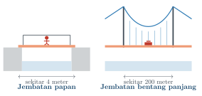
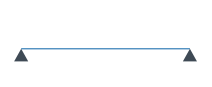
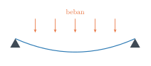
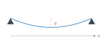
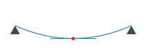
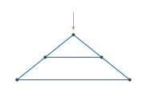

Matematika I · 2 SKS · Teknik Sipil
Pertemuan pertama, dan belum ada yang perlu dihitung
Mohammad Jamhuri
Geser ke samping atau tekan panah untuk berpindah slide
Selamat datang di Matematika I.
Sebelum kita mulai, saya ingin menebak apa yang ada di pikiran sebagian dari Anda hari ini.
“Saya masuk Teknik Sipil karena ingin membangun jembatan dan gedung.
Lalu kenapa saya harus belajar matematika lagi?”
Sebelum menjawabnya, coba bandingkan dua bangunan ini.

Yang kiri bisa dibuat oleh tukang berpengalaman, tanpa menghitung apa pun.
Ia tahu dari kebiasaan: papan setebal ini, untuk bentang sependek itu, sudah cukup kuat. Dan biasanya ia benar.
Yang kanan tidak bisa ditebak dari kebiasaan.
Tidak ada tukang, sehebat apa pun jam terbangnya, yang pernah merasakan bentang dua ratus meter cukup sering untuk tahu berapa tebal kabelnya.
Dan kalau tebakannya meleset, yang terjadi bukan sekadar jembatan bergoyang.
Yang terjadi adalah jembatan runtuh, dengan orang di atasnya.
Jadi ini bukan soal siapa yang lebih pintar. Tukang menguasai banyak hal yang tidak dikuasai insinyur.
Ini soal batas dari apa yang bisa ditebak lewat pengalaman.
Begitu bangunan menjadi lebih besar, lebih tinggi, atau lebih panjang daripada yang pernah dilihat siapa pun, pengalaman kehabisan bekal.
Yang tersisa hanyalah hitungan.
Dan di situlah letak pekerjaan Anda nanti.
Insinyur adalah orang yang bisa menjawab dengan angka, untuk bangunan yang belum pernah ia lihat sekalipun.
Bagian satu
Bayangkan Anda sudah lulus, dan pekerjaan pertama Anda adalah merancang sebuah balok beton untuk lantai gedung.

Ini baloknya. Masih lurus, karena belum dibebani apa-apa.

Begitu dibebani, balok itu melengkung. Sedikit, tetapi pasti melengkung.
Sekarang muncul pertanyaan yang harus Anda jawab sebagai perancang:
seberapa besar lengkungan itu, dan di titik mana paling besar?
Kenapa itu penting? Karena kalau lengkungannya melebihi batas, lantai terasa bergoyang saat dilewati, plafon retak, dan penghuni merasa gedungnya tidak aman.
Padahal secara kekuatan, balok itu belum tentu akan patah.
Jadi Anda perlu angka, bukan perkiraan.
Dan untuk mendapat angka, lengkungan tadi harus ditulis sebagai sesuatu yang bisa dihitung.

Kita beri nama: x adalah posisi di sepanjang balok, dan y adalah seberapa turun balok di posisi itu.
Hubungan antara x dan y inilah yang dalam matematika disebut fungsi, ditulis y(x).
Kita akan membahasnya di minggu kedua.
Sekarang perhatikan titik paling bawah dari lengkungan tadi.
Apa yang istimewa dari titik itu?

Di titik terendah itu, kurvanya sedang mendatar. Garis hijau itu rata, tidak naik dan tidak turun.
Nah, “seberapa miring kurva di suatu titik” itu ada namanya dalam matematika.
Namanya turunan.
Dan karena di titik terendah kurvanya mendatar, artinya turunannya nol di sana.
Jadi untuk mencari lendutan terbesar, Anda cukup mencari di mana y′(x) = 0.
Perhatikan apa yang baru saja terjadi.
Sebuah pertanyaan teknik, yaitu “di mana lantai paling melendut”, berubah menjadi sebuah pertanyaan matematika yang punya jawaban pasti.
Itulah gunanya matematika bagi insinyur.
Turunan akan kita pelajari mulai minggu kelima.
Tetapi tadi baru satu pertanyaan. Masih ada dua lagi.
Pertanyaan kedua: berapa ukuran yang paling hemat?
Balok yang sangat besar pasti kuat, tetapi mahal dan berat. Balok yang terlalu kecil murah, tetapi berbahaya.
Di antara keduanya ada satu ukuran yang paling masuk akal: cukup kuat, dengan bahan sesedikit mungkin.
Mencari “yang paling” seperti itu namanya optimasi, dan alatnya juga turunan.
Kita bahas di minggu kesembilan.
Pertanyaan ketiga muncul kalau strukturnya tidak lagi satu balok, melainkan banyak batang sekaligus.

Pada rangka seperti ini, gaya di satu batang memengaruhi batang lainnya. Semuanya saling terkait.
Setiap titik sambungan memberi satu persamaan keseimbangan. Sepuluh sambungan berarti sekitar dua puluh persamaan, dan semuanya harus dipenuhi pada saat yang sama.
Tidak bisa diselesaikan satu per satu.
Kumpulan persamaan yang harus dipenuhi serentak itu disebut sistem persamaan linear.
Cara menyelesaikannya kita pelajari di minggu kesepuluh sampai keempat belas.
Dan ini bukan sekadar latihan di kertas.
Perangkat lunak seperti SAP2000 atau ETABS, yang kelak Anda pakai di kantor, pada dasarnya adalah mesin yang menyelesaikan sistem seperti itu, hanya saja ukurannya ribuan persamaan.
Kita belajar versi kecilnya dengan tangan, supaya Anda paham apa yang sebenarnya dikerjakan komputer.
| Pertanyaan insinyur | Alat matematika |
|---|---|
| Seberapa cepat berubah? | Turunan |
| Ukuran mana yang paling hemat? | Optimasi |
| Banyak gaya sekaligus? | Matriks dan SPL |
Bagian dua
Satu semester ini ada enam belas minggu.
Dua di antaranya untuk ujian, jadi kita punya empat belas kali pertemuan.
| Mg | Materi |
|---|---|
| 1 | Pengantar dan review aljabar |
| 2 | Fungsi dan grafik |
| 3 | Trigonometri dan gaya |
| 4 | Limit dan kekontinuan |
| 5 | Turunan |
| 6 | Aturan turunan |
| 7 | Aplikasi turunan |
| 8 | Ujian Tengah Semester |
| Mg | Materi |
|---|---|
| 9 | Optimasi |
| 10 | Vektor dan SPL |
| 11 | Matriks |
| 12 | Determinan dan invers |
| 13 | Metode Gauss |
| 14 | Penerapan pada teknik sipil |
| 15 | Review menyeluruh |
| 16 | Ujian Akhir Semester |
Kalau diperhatikan, semester ini sebenarnya terbagi menjadi dua babak.
Babak pertama, minggu kedua sampai kesembilan, kita mempelajari satu besaran yang berubah.
Misalnya lendutan yang berubah di sepanjang balok. Pertanyaannya: seberapa cepat berubah, dan di mana nilainya paling besar.
Babak kedua, minggu kesepuluh sampai keempat belas, kita mempelajari banyak besaran sekaligus.
Misalnya gaya pada dua puluh batang yang saling terkait. Pertanyaannya: berapa nilai semuanya, supaya seluruh syarat terpenuhi.
Keduanya bukan mata kuliah terpisah yang kebetulan digabung.
Menganalisis satu struktur sungguhan memerlukan keduanya sekaligus.
Dan Matematika I ini baru permulaan. Setelah ini ada Matematika II, lalu Matematika Progresif, lalu Matematika Advanced.
Apa yang tidak dikuasai sekarang akan menagih lagi nanti. Turunan yang kita pelajari minggu kelima masih akan dipakai sampai semester atas.
Bagian tiga
Kehadiran minimal 75% supaya boleh ikut ujian akhir. Terlambat lebih dari lima belas menit dihitung tidak hadir.
Kalau berhalangan karena sakit atau tugas kampus, bawa surat keterangan.
Di kelas, silakan bertanya kapan saja. Tidak perlu menunggu dipersilakan, dan tidak ada pertanyaan yang terlalu sederhana.
Justru pertanyaan yang terdengar sederhana biasanya yang paling banyak menolong teman sekelas.
Tugas diberikan hampir setiap pertemuan dan dikumpulkan pada pertemuan berikutnya.
Berdiskusi dengan teman dipersilakan. Yang tidak boleh adalah menyalin, sebab yang diuji nanti adalah kemampuan Anda sendiri.
| Kehadiran dan keaktifan | 10% |
| Tugas | 20% |
| Kuis | 15% |
| Ujian Tengah Semester | 25% |
| Ujian Akhir Semester | 30% |
| Jumlah | 100% |
Coba perhatikan angkanya. Kegiatan harian, yaitu kehadiran, tugas, dan kuis, berjumlah 45%.
Artinya hampir separuh nilai Anda ditentukan oleh kebiasaan sehari-hari, bukan oleh dua hari ujian.
Kabar baiknya: mahasiswa yang rajin mengerjakan tugas jarang sekali gagal, bahkan ketika hasil ujiannya biasa saja.
Bagian empat
Buku pegangan kita berjudul Matematika I: Kalkulus dan Aljabar Linier Elementer untuk Teknik Sipil, disusun khusus untuk mata kuliah ini.
Setiap bab memuat tujuan, uraian, contoh yang dikerjakan langkah demi langkah, soal latihan, dan kunci pembahasannya.
Bukunya tersedia daring lewat Google Books.
Satu saran soal cara memakainya.
Bacalah bagian yang akan dibahas sebelum kuliah, walaupun belum paham. Tidak apa-apa bingung. Yang penting, saat saya menjelaskan, istilahnya sudah pernah Anda lihat.
Percayalah, kuliahnya akan terasa jauh lebih ringan.
Bagian lima
Semua yang akan kita pelajari dibangun di atas aljabar dan trigonometri SMA.
Jadi sekarang saya ingin tahu, dan Anda juga perlu tahu, bagian mana yang masih perlu diperkuat.
Ini tidak dinilai. Tidak ada hubungannya dengan nilai akhir Anda.
Kerjakan sendiri di kertas, kira-kira dua belas menit.
Sekarang bagian yang menarik.
Kedelapan soal itu tidak dipilih sembarangan.
| Soal | Bekal | Nanti dipakai untuk | Mg |
|---|---|---|---|
| 1, 2 | pemfaktoran | menghitung limit | 4 |
| 3 | pertidaksamaan | selang naik dan turun | 7 |
| 4 | nilai mutlak | kekontinuan dan galat | 4 |
| 5 | sifat eksponen | aturan pangkat pada turunan | 5, 6 |
| 6 | trigonometri | menguraikan gaya | 3 |
| 7 | persamaan garis | garis singgung | 7 |
| 8 | sistem dua persamaan | SPL dan matriks | 10–14 |
Jadi kalau tadi ada nomor yang terasa berat, itu bukan masalah kecil yang bisa dibiarkan.
Perbaiki minggu ini juga, selagi materinya belum menumpuk.
Bagian enam
Ada satu hal yang membedakan matematika dari banyak mata kuliah lain: sifatnya menumpuk.
Materi minggu keenam memerlukan minggu kelima. Sekali tertinggal dan dibiarkan, jaraknya melebar dengan cepat.
Karena itu cara belajarnya juga berbeda.
Matematika tidak bisa dipelajari dengan membaca saja. Harus dikerjakan, dengan tangan, dengan kertas.
Membaca penyelesaian orang lain terasa seperti paham. Tetapi baru ketahuan benar-benar paham atau tidak saat Anda mengerjakan sendiri.
Dan satu hal terakhir, ini penting.
Tidak ada mahasiswa yang tidak berbakat matematika.
Yang ada hanyalah yang belum cukup berlatih.
Kemampuan matematika itu dibangun, bukan diwarisi.
Untuk minggu depan, tiga hal saja:
perbaiki nomor yang tadi terasa sulit, siapkan buku catatan khusus mata kuliah ini, dan baca bab tentang fungsi dan grafik.
Minggu depan kita mulai dari fungsi, yaitu cara matematika menuliskan hubungan antara dua besaran.
Seperti hubungan antara beban dan lendutan yang tadi kita lihat.